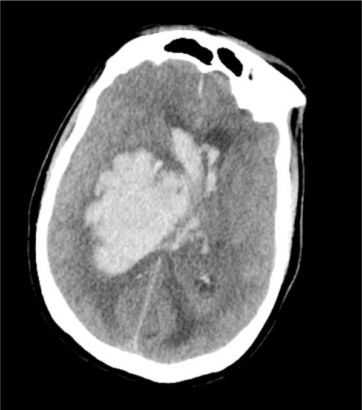
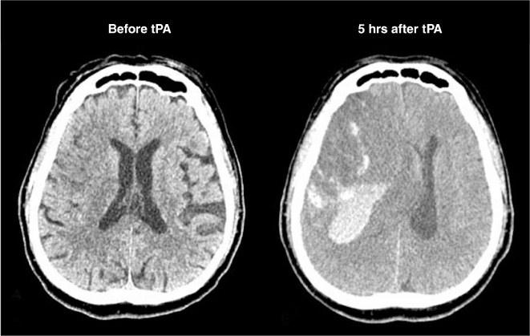

La caja cerrada
Para revisar: aún no está en la app
Explorar
Apuesta
Error
Caso
PAM
PIC
PPC
GCS
PaCO₂
Pupilas
Figuras reales del libro

Fig. 47.3 · hematoma con sangre ventricular (Marino, p. 45)

Fig. 47.2 · hemorragia tras tPA (Marino, p. 39)
Las fuentes de este modelo
Notas: lo que la fuente no dice, lo que discrepa
Para profundizar: lo que el modelo no enseña
Masa y presión
Respirador, tiempo, pacientes